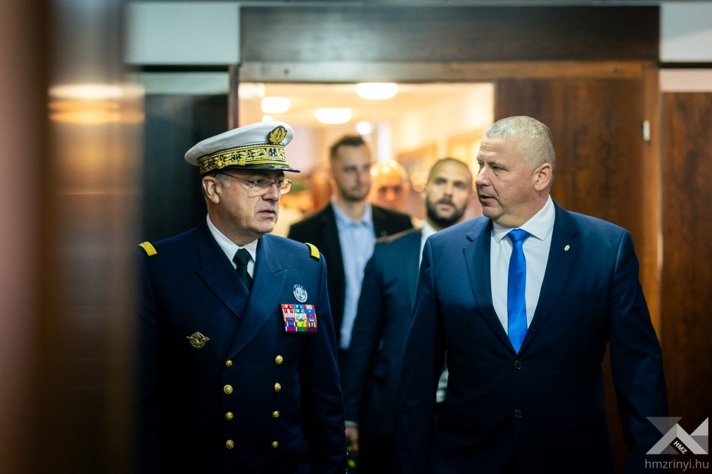
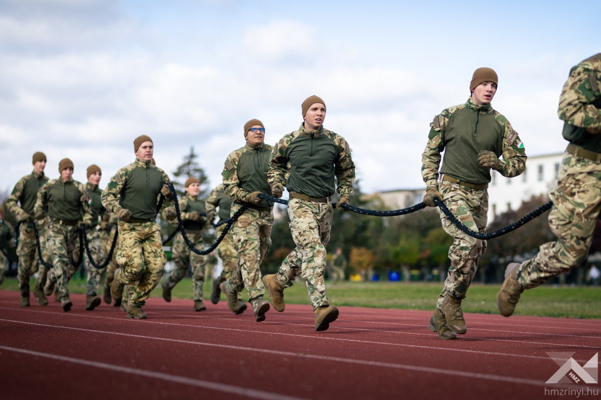
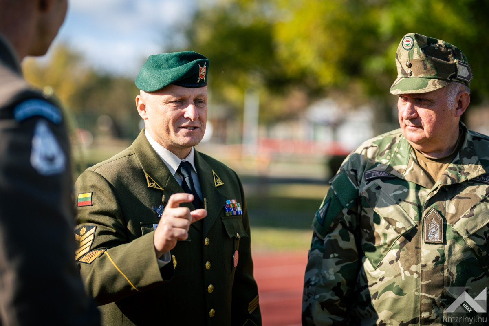

Legfrissebb híreink!

VERSENY A GYORSABB ALKALMAZKODÁSÉRT
„Az ukrajnai és a közel-keleti konfliktusok tanulságai egyértelműek: a hadviselés jellege eddig nem tapasztalt ütemben változik. A drónok, a mesterséges intelligencia, az autonóm rendszerek és az új harcászati eljárások alapjaiban alakítják át a harcteret. Ami ma még eredményt hoz, néhány héten belül már elavulttá válhat. A gyorsabb alkalmazkodásért folyik napjaink versenye” – hangsúlyozta Pierre Vandier tengernagy, a NATO Szövetséges Transzformációs Főparancsnoka, aki kétnapos látogatása végén Sándor Zsolt vezérezredessel, a Honvéd Vezérkar főnökével tartott sajtótájékoztatót.

ROHAMLÖVÉSZ ALAPTANFOLYAM: HARCÁSZATI FELKÉSZÍTÉS ÉS GYAKORLATI VIZSGA
Az MH Különleges Műveleti Parancsnokság által szervezett rohamlövész alaptanfolyam jelöltjei az elmúlt időszakban raj- és szakaszszinten gyakorolták a különböző harcászati eljárásokat. A gyakorlati vizsgán a jelöltek a fegyverzettechnika, a tereptan, a harctéri sebesültellátás, a könnyűlövész-szakharcászat és a híradó szakkiképzés területein megszerzett tudásukról adtak számot.

NATO-fókuszban az altisztképzés
A Magyar Honvédség altisztképzési rendszeréről kapott részletes tájékoztatást Remigijus Katinas főtörzszászlós, a NATO Szövetséges Transzformációs Parancsnokság (ACT) vezénylőzászlósa, aki Zsiros Tamás MH vezénylő zászlós, a Magyar Honvédség vezénylőzászlósa kíséretében október 26-án Szentendrére, az MH Altiszti Akadémiára látogatott.
Ismerj meg minket jobban!


Járműveink
Ismerd meg a magyar légierő múltbéli és jelenkori járműparkját és részletes bemutatóját.
Látogasd meg!
Galéria
Tekints meg néhány képet a múltbeli és jelenlegi gépparkunkról és infrastruktúránkról.
Látogasd meg!Kapcsolatok!
Elérhetőségeink:
- Telefonszám: +36 1 234 5678
- SMS: +36 2 345 6789
- Postacím: Kecskemét, Reptéri út 4., 6000 Magyarország